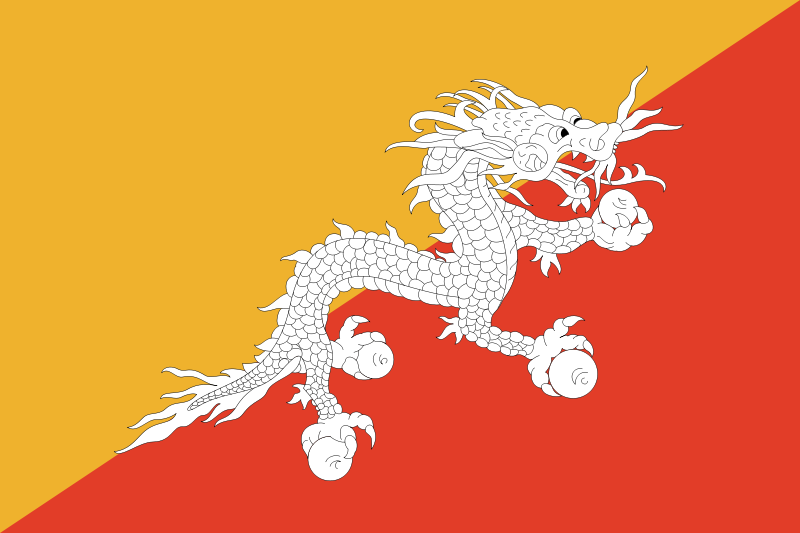
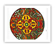
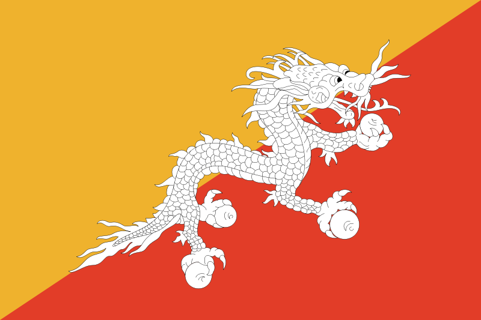
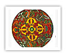

Druk Yul, “land of the thunder dragon”
Fast Facts about Bhutan
The export of hydroelectricity to India provides 32% of government revenue
Number of tourists visiting Bhutan in 2005: 13,600
Human Development Index ranking: 134 out of 177 countries
Percentage of population involved in agriculture: 69%
Tourism is the third largest provider of foreign exchange in Bhutan, earning it US$18.5 million in 2005
Area of bhutan: 38, 392 sq km – similar size to Switzerland
Population: 634, 982 as of the 2005 Census
Life expectancy: 63
Percentage of Bhutan’s land used for agriculture: 7.8%
Forest cover: 72.5%
You could treat yourself to a birthday to remember - in Bhutan!
Our special birthday tours start from as little as £2,500 for seven days of unforgettable forest, majestic mountains, crystal clear air. Don't miss out! Call us now on 08000 778899!
 


